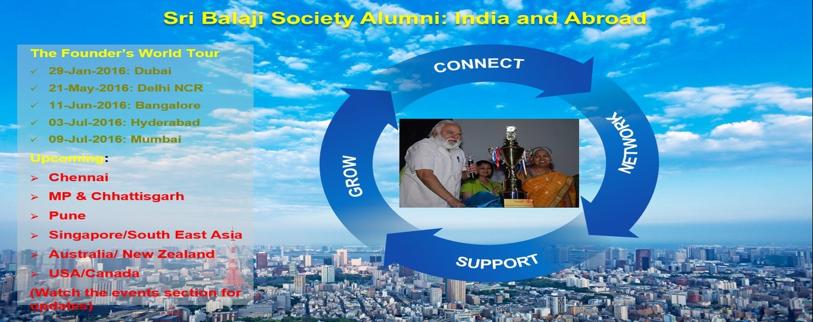
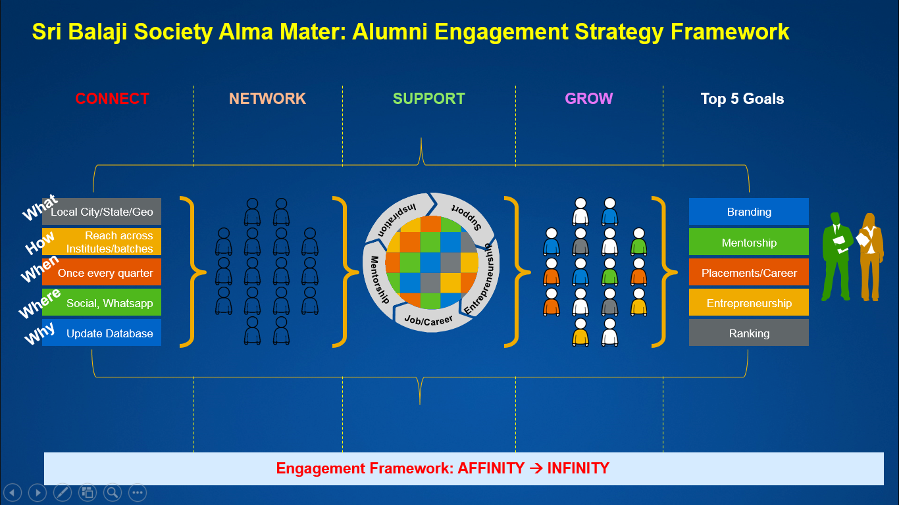

<div class="container">
    <div class="row">
        <div class="col-md-3">
            <!-- Tabs nav -->
            <div class="nav flex-column nav-pills nav-pills-custom" id="v-pills-tab" role="tablist"
                aria-orientation="vertical">

                <a class="nav-link mb-3 p-3 shadow active" id="v-pills-vision-tab" data-bs-toggle="pill"
                    data-bs-target="#v-pills-vision" role="tab" aria-controls="v-pills-vision" aria-selected="false">
                    <span class="font-weight-bold small text-uppercase"> Sri Balaji Society: Alumni Connect Vision
                    </span></a>

                <a class="nav-link mb-3 p-3 shadow" id="v-pills-strategy-tab" data-bs-toggle="pill"
                    data-bs-target="#v-pills-strategy" role="tab" aria-controls="v-pills-strategy"
                    aria-selected="false">
                    <span class="font-weight-bold small text-uppercase"> Sri Balaji Society: Alumni Connect Strategy
                        Framework
                    </span></a>


            </div>
        </div>


        <div class="col-md-9">
            <!-- Tabs content -->
            <div class="tab-content" id="v-pills-tabContent">
                <div class="tab-pane fade shadow rounded bg-white show active p-5" id="v-pills-vision" role="tabpanel"
                    aria-labelledby="v-pills-vision-tab">
                    <h4 class="font-italic mb-4">The Founder & President – Dr. (Col.) A. Balasubramanian Message on the
                        Sri Balaji Society: Alumni Connect Vision </h4>
                    <div class="row justify-content-center">
                        <div class="col text-center">
                            <iframe width="800" height="400" src="https://youtube.com/embed/nYulgKoVSjw"></iframe>
                        </div>
                    </div><br>
                    <h4 class="font-italic mb-4">The Founder's World Tour To Inaugurate & launch The Sri Balaji
                        Society:Alumni Clubs in India and Abroad
                    </h4>
                    <br><br>
                    <h4 class="font-italic mb-4">Sri Balaji Society: Alumni Connect Vision

                    </h4>
                    <div class="row justify-content-center">
                        <div class="col ">
                            <h4 class="text-center font-italic mb-4">Connect</h4><br>
                            <ul class="text-left">
                                <li>
                                    Find and connect with fellow Alumni from your batch, in your city or geography
                                </li>
                                <li>Connect with Sri Balaji Society – Alma Mater</li>
                            </ul>
                        </div>
                        <div class="col ">
                            <h4 class="text-center font-italic mb-4">Network</h4><br>
                            <ul class="text-left">
                                <li>
                                    Professional focus groups</li>
                                <li> Trending topics</li>
                                <li>Industry focus groups</li>
                                <li>Career Advancement corner</li>
                                <li>Post jobs</li>
                                <li>Find jobs</li>
                                <li> Entrepreneurship Clubs</li>
                                <li>Start-up corner</li>
                                <li>Launch Ideas</li>
                                <li>Seek Funding</li>
                                <li>Alumni with specific domain expertise</li>
                            </ul>
                        </div>
                        <div class="col ">
                            <h4 class="text-center font-italic mb-4">ENGAGE & SUPPORT</h4><br>
                            <ul class="text-left">
                                <li>Alumni clubs</li>
                                <li>Sri Balaji Society – Alma Mater</li>
                                <li>As an expert guest faculty</li>
                                <li>As an panelist on Admission</li>
                                <li> As a National Seminar Speaker</li>
                                <li> Special Projects/Charity
                                </li>
                            </ul>

                        </div>
                        <div class="col ">
                            <h4 class="text-center font-italic mb-4">LEARN & GROW</h4><br>
                            <ul class="text-left">
                                <li>Mentorship
                                </li>
                                <li>
                                    Exclusive resources
                                </li>
                                <li>
                                    Contribute back</li>
                            </ul>
                        </div>
                    </div>
                    <br>
                    <ul style="margin-left: 2.5%;">
                        <li>To share the Common Purpose and foster a Culture of actively engaging together to</li>
                        <ul style="margin-left:3%">
                            <li>Connect</li>
                            <li>Network</li>
                            <li>Engage and Support</li>
                            <li>Learn and Grow</li>
                        </ul>
                        <li>To form a compassionate Alumni Community.</li>
                        <li>To Connect Alumni within India and all across the world.</li>
                        <li>To Collaborate with Alumni and Contribute to each others’ growth.</li>
                        <li>To Celebrate and recognize Alumni achievements and success stories.</li>
                        <li>To Fellowship.</li>
                        <li>To enable Mentorship Program by engaging in lifelong learning.</li>
                        <li>To provide a platform to share ideas around professional/industry latest trends and
                            opportunities,career advancement, entrepreneurship, start-ups, non-profit and areas that are
                            of interest to the Alumni community.</li>
                        <li>To contribute to the wider communities, nation and world by being a Force For Good. </li>
                    </ul>
                </div>

                <div class="tab-pane fade shadow rounded bg-white p-5" id="v-pills-strategy" role="tabpanel"
                    aria-labelledby="v-pills-strategy-tab">
                    <h4 class="font-italic mb-4">Sri Balaji Society Alma Mater: Alumni Engagement Strategy Framework
                    </h4>
                    <br><br>
                </div>

            </div>
        </div>
    </div>
</div>